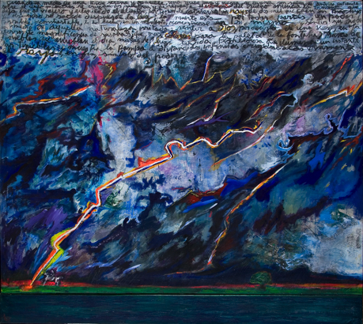

Apuntes para una colección digital
Introducción
Antes de asistir a las visitas de cada museo o sala, me gusta indagar en sus páginas web, como una forma de poder anticiparme a lo que voy a ver y de acceder a información adicional que pueda aportar a la visita. Una web resulta algo casi imprescindible para cualquier institución museística hoy en día. La posibilidad de poder consultar horarios, exposiciones activas, y catálogo es algo que cualquier visitante toma como algo dado, esperable. En la web, como en cada material de difusión, los museos siguen determinadas líneas de diseño de acuerdo a la identidad que pretenden mantener. En este ensayo, me propongo analizar cómo se trasladan esas decisiones y construcción de identidad a la web, comparando las páginas de Sala Pays, el Malba, y la Colección Amalita; como también indagar en las potencialidades y pérdidas de internet como un espacio de exhibición, más allá de su uso como espacio de archivo o catálogo. Para ello me basaré en los textos “Diseño y arte contemporáneo: el desafío de los museos”, de Mariel Szlifman en Revista Kepes, #12; “La historia en (las) imágenes: archivo, memoria, video” de Mariela Cantú, “Del marco al margen: El Museo Moderno.”, de Zunzunegui, S y “Espacios líquidos: Tipologías en mutación para espacios expositivos en Internet” de Doreen A. Ríos.
Sala Pays
A comparación de los demás casos a analizar, la Sala Pays no es un museo o institución, sino una sala de exposición sin una colección permanente. Esta condición se ve reflejada en el hecho de que La Sala Pays no tiene una página web dedicada, sino que toda la información que refiere a ella está en una sección llamada “arte” de la web del Parque de la Memoria. El diseño de esta sección es simple, utiliza blanco, negro y un turquesa como color de resalte, en linea con el resto de la web del Parque de la Memoria. Las animaciones al interactuar son simples y la información acerca de las exposiciones está dispuesta de forma vertical y clara. Estas decisiones se alinean con un espacio que se encuentra dentro de un lugar como el Parque de la Memoria, donde la seriedad del lugar y lo que significa para la ciudad llaman a un diseño más sobrio. Además, al depender del gobierno de la ciudad, el diseño debe acercarse al de una institución gubernamental, que suele priorizar la claridad y sencillez sobre diseños más cargados y llamativos.
Al no tener una colección permanente, la web prioriza las exposiciones temporales y las esculturas presentes en el parque. En la sección de exposiciones, se ve primero una sección con la exposición actual y debajo otra con las exposiciones pasadas que llega hasta el año 2011. La página no propone ningún parámetro de búsqueda predeterminado, solo un buscador en el que se puede escribir cualquier cosa que uno tenga interés en buscar. Si hacemos click en alguna de las exposiciones, solo se nos muestran algunas fotos de las obras acompañadas de un breve texto que describe la exposición y nombra a los artistas y el curador. Esto es algo que se repetirá en los demás casos. La web funciona, antes que nada, como un folleto más que como otro lugar de visualización. La función primaria que estas instituciones le dan es la de difusión, para invitar al público a los museos y ahí sí poder acceder a la totalidad de la exposición.
Colección Amalita
La web de la Colección Amalita distingue en su barra de navegación entre exposición, colección, publicaciones, información, programa educativo y tienda. Además, gran parte de la pantalla de inicio está ocupada por un slider que deja ver las dos exposiciones actuales y por último la colección permanente.
El diseño de la web es, a comparación del de Sala Pays, mucho más cargado. Cada una de las exposiciones tiene un color particular: beige para “Reunión en neocriollo”, terracota para “Creencias y supersticiones de siempre”, y un turquesa oscuro para la colección permanente. El turquesa oscuro además se ve cada vez que se posa el mouse sobre algún hipervínculo. Este color es el mismo que está en el logo de la colección, por lo que podemos analizar esta decisión de diseño como una vuelta constante a la “marca” Amalita, lo cual podría leerse también como una forma de sostener la asociación entre la colección y la figura de su fundadora. Aquí comienza a observarse la noción de “consumo total”, como el producto del cruce entre diseño y arte (Szlifman, 2015). Todas las decisiones de diseño de la web se alinean con el diseño de marca de la colección, en pos de la percepción y construcción que esta busca generar. Al tener una colección permanente, acá sí podemos acceder a la colección completa. La web separa la colección en arte argentino, arte internacional y artistas. En las 3 secciones las obras o artistas se ordenan de forma alfabética, sin la posibilidad de buscar con otro parámetro, como podría ser movimiento artístico u orden cronológico, categorías típicas de lo museístico.
Malba
La web del Malba también posee secciones diferenciadas pero dentro de un menú que contiene muchísimas opciones . Esto da cuenta del carácter más abarcativo del museo, que busca ocupar otros espacios más allá de la sala, como el cine, el dictado de cursos o talleres, etc. El diseño es minimalista, con el nombre del museo en letra negra grande, ocupando casi la mitad de la página de inicio. Se acerca más al diseño web contemporáneo, con pocos elementos pero colores fuertes (el amarillo del menú) y tipografías grandes en negrita.
En cuanto a su colección, la web tiene una sección dedicada en la que se puede leer un texto breve que habla de la historia y motivaciones de la colección. El texto hace referencia al origen de la colección “La génesis del acervo se apoya en el perfil de coleccionista que Costantini consolidó durante los años noventa. Según él mismo ha expresado, su estrategia consiste en adquirir piezas destacadas por su circulación histórica, pertenecientes a artistas canónicos del arte latinoamericano. Esa lógica de adquisición inscribe al acervo en los circuitos globales del arte.” Malba.org.ar , destacando el rol de Constantini (nótese la importancia de la figura de Constantini y la búsqueda de ocupar un lugar en el circuito global del arte).
Debajo, otro texto titulado “Imperdibles” hace referencia a artistas destacados de Latinoamérica cuyas obras posee el museo. Es interesante que el museo destaque estos artistas, creo yo, como una forma de diferenciarse y resaltar la importancia del museo en el arte latinoamericano. Además, agrega un componente más espectacular y propio de esta época, en la que el arte se vuelve un consumo más. A partir del consumo, el “consumidor cultural” del siglo XXI “(...) satisface necesidades, produce procesos de distinción y de identificación” (Szlifman, 2015). Al catalogar las obras como imperdibles, se apela a esta necesidad, y su consumo se vuelve una obligación. Una vez visitado el museo y observados los “imperdibles”, el visitante puede tachar Frida Kahlo, Xul Solar, o el Abaporú de Tarsila do Amaral y seguir tranquilo en busca del próximo consumo cultural obligatorio.
Debajo de este texto se ven algunas obras destacadas de la colección, que se actualizan cada cierto tiempo, salvo dos obras de Frida Kahlo (esto lo comprobé actualizando la página y entrando en distintos momentos del día). Si tenemos en cuenta la relevancia que tiene la obra de Frida Kahlo, una de las artistas latinoamericanas más reconocidas a nivel mundial, podemos ver en esta decisión una búsqueda de resaltar el rol del Malba como exponente del arte latinoamericano a nivel global.
Experiencias
Si me detengo a comparar las visitas a Sala Pays, Colección Amalita y el Malba con el tiempo que pasé mirando sus webs surge un señalamiento bastante obvio: nada puede reemplazar la experiencia de ver las obras en persona. Siempre me gustó el cuadro
Tormenta en la Pampa - Homenaje a una pintura escrita por Sarmiento

¿Sólo un archivo?
Luego de analizar los aspectos más significativos de cada web podemos ver cómo las decisiones de marca/identidad se trasladan a cada una. Esto resulta lógico, ya que la web es para estas instituciones un elemento más dentro de su diseño de identidad, por lo que es esperable que se mantenga la misma línea, cada una con sus particularidades. Algo que persiste en todas, pero sobre todo en aquellas que permiten acceder a la colección completa, es el traslado de categorías o parámetros de organización típicos de los museos o instituciones. Ninguna de las secciones dedicadas a la colección propone otros recorridos que no sean los típicos: arte argentino/internacional, autor, técnica, o “imperdibles”. Estas categorías son un mal necesario muchas veces, facilitan la búsqueda y análisis de ciertos movimientos, períodos históricos o de autores, pero no dejan de ser categorías heredadas del estudio o historia del arte. Esta organización también refuerza una idea de archivo “neutro”, sin intervención, el cual uno puede explorar libremente sin ninguna lectura obligada o predefinida. Sin embargo, lo que sucede es todo lo contrario. Si pienso en las visitas realizadas, los 3 casos plantean en mayor o menor medida una distribución de planta abierta característica del museo moderno. Zunzunegui sostiene que esta distribución pretende desemantizar la experiencia en pos de una liberalización de la experiencia del visitante (Zunzunegui, 1990). Partiendo de esa base, podemos ver lo que sucede en las webs como una gran contradicción, en donde los contenidos están rigurosamente ordenados bajo criterios que dificultan cualquier recorrido o experiencia que no sea el planteado. En la Colección Amalita, por ejemplo, las obras se encuentran dentro de salas rectangulares en las que si bien hay ciertos recorridos planteados por el orden mismo de las obras, se puede recorrer libremente y saltar de una obra a otra que está del otro lado del salón. En su web, la única forma de recorrer el catálogo es por arte argentino, arte internacional o artistas, siempre en orden alfabético. Esto desmonta la idea de la web o del catálogo como un archivo neutro. Ningún archivo es neutro o atemporal (Cantú, 2012). En cada proceso de organización se pierde algo, pero también se amplían las posibilidades del material original al ponerlo en relación con otros. ¿Por qué no pensar entonces en lo que nos puede dar internet en vez de forzarlo a ser algo que nunca podrá ser?
Recorridos alternativos
Si tenemos en cuenta las posibilidades de internet como un espacio de exhibición, su capacidad de funcionar "como un sistema abierto que posibilita indagar y añadir categorías diversas de forma permanente" (Cantú, 2012), podríamos aprovechar estos espacios para proponer otros recorridos que, sin excluir los ya mencionados, enriquezcan la experiencia y posibiliten relaciones entre obras nunca antes exploradas. En una primera instancia, podría pensarse en identificar motivos o símbolos que se repitan en las obras, como el Atlas Mnemosyne de Aby Warburg. También podría clasificarse las obras por color más presente, por paletas que se repitan, por emociones que representen, etc. Las posibilidades son infinitas, y también da lugar a la interactividad del usuario, algo poco común a la hora de acceder a una colección o visitar una exposición. En la sección “Recorrido” de esta web, propongo algunas clasificaciones poco usuales y también ofrezco la oportunidad de crear recorridos propios a cada usuario, ordenando obras según criterios y relaciones propias. La mayoría de las obras seleccionadas corresponden a las que pude ver en las visitas a las distintas salas, pero también me tomé la libertad de agregar obras que no están en exhibición. En general me guíe por lo que me llamó la atención y me parecía que podía aportar a mi colección personal de jpgs.
Esta posibilidad de recorridos alternativos propios de la web no es algo del todo inexplorado. Desde sus inicios, “Internet parecía ofrecer una válvula de escape a la rigidez del cubo blanco a la vez que amplificaba las posibles vías de difusión para la cultura y las artes” (Ríos, s/f). Muchos de los primeros proyectos web relacionados al arte se centraban en la colaboración y la comunidad, permitiendo establecer otro tipo de relaciones e interacciones con las obras. Más adelante, el acceso masivo a internet o el boom de las aplicaciones celulares también alentaron la interacción de los usuarios en el proceso de visionado de obras o incluso en su generación. Sin embargo, como señala Ríos: “debido a unas políticas internas normalmente rígidas y a un enfoque general más escéptico hacia las tecnologías digitales, los museos de arte, las galerías y las instituciones artísticas más consolidadas han tenido dificultades para seguir el rápido ritmo de la cultura de Internet” (Ríos, s/f). Podemos ver claramente esto en los 3 casos analizados, en los que se prioriza la continuidad de la marca institucional por sobre la exploración de otros formatos e intervenciones que implicarían un riesgo para estas instituciones.
Conclusión
Luego de todo el análisis y pruebas por generar otro tipo de recorridos y formas de organizar las obras, puedo concluir en que la web es un espacio propicio para el visionado o la exhibición, siempre y cuando se entiendan sus limitaciones y potencialidades. No se trata de lanzarse desesperadamente hacia la web solo para ocupar ese espacio, sino de analizar las posibilidades que este ofrece para explotarlas y poder aportar algo más a la experiencia del museo. Las posibilidades son infinitas. En mi propio intento por armar una colección personal, me di cuenta de lo fácil que se hace seguir agregando categorías de clasificación y como al pensarlas de forma no excluyente se genera una red de conexiones muy densa y rica, que permite relacionar obras de cualquier manera posible. En mi opinión, ahí se encuentra la mayor fortaleza de internet, en su capacidad de almacenar y disponer mucha información de forma clara y navegable, algo que sería casi imposible en un espacio físico.
Bibliografía
- Szlifman, M. (2015). Diseño y arte contemporáneo: el desafío de los museos. Revista Kepes, 12, 353-378. DOI: 10.17151/kepes.2015.12.12.17.
- Cantú, M. (2012), La historia en (las) imágenes: archivo, memoria, video. Publicado en: La Ferla J. y Reynal S. (comp), Territorios Audiovisuales, Libraria. Buenos Aires, Argentina.
- Zunzunegui, S. (1990). Del marco al margen: El Museo Moderno. En Metamorfosis de la mirada. Museo y semiótica (pp. 90-95).
- Ríos, Doreen A, (Fecha). “Espacios líquidos: Tipologías en mutación para espacios expositivos en Internet”. https://anti-materia.org/ Recuperado de https://anti-materia.org/espacios-liquidos.